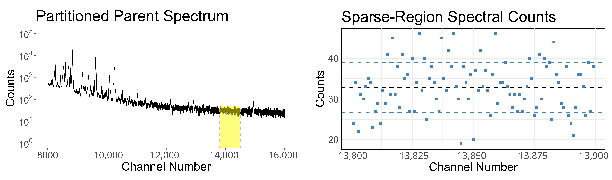
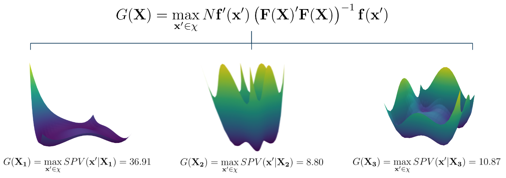

Gamma-ray spectra provide a highly informative data stream in nuclear safeguards,
communicating the isotopic composition of an assayed sample without destroying the sample itself.
To justify the use of a particular gamma detector, sensitivity
studies are often required. This involves partitioning a spectrum
until an isotope is barely—but still significantly—identifiable. To aid
in performing these so-called "limit of detection" studies, this work evaluates
common partitioning techniques, highlights critical shortcomings of several common
methods, and justifies the most defensible approach.

A parent gamma-ray spectrum (left) alongside a visualization of the counts by channel
in a sparse, flat region (right). This region is well-controlled, and offers a principled
way to assess variance preservation when subsampling spectra.
Quality and Reliability Engineering International · 2024
A Non-Approximate Method for Generating G-Optimal RSM Designs
Optimal experimental designs are a powerful inference tool, allowing
researchers to "design for the experiment" rather than "experiment for the design."
Kristine Smith introduced the concept of optimal experimental designs in 1918, analytically
deriving designs that minimize worst-case scenario prediction variance under a first-order
linear model. These designs would become known G-optimal designs. By fusing several
sophisticated computational tools into a single unified workflow, this work presents the first
non-approximate solution to the problem posed by Kristine Smith way back in 1918.

Three surfaces that must be correctly optimized to find the G-optimal design.
The presence of many optima for each design illustrates an issue with many optimization
techniques used for this task: entrapment in local optima is likely.